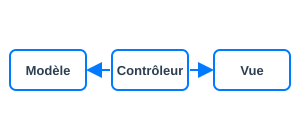

Contexte
En équipe de six et sur 100 heures, nous avons développé une application de gestion de loto en Java avec JavaFX, en suivant l'architecture MVC (Modèle – Vue – Contrôleur).
Technologies utilisées
- Java
- JavaFX
- Architecture MVC
- JUnit
Ma contribution
- Création de toutes les classes de l'application
- Liaison entre les contrôleurs et les classes du modèle
- Tests unitaires des classes du modèle avec JUnit
Compétences acquises
- Architecture logicielle (MVC)
- Tests unitaires
- Travail en équipe de six
Savoir-faire acquis
Structurer une application selon l'architecture MVC et en tester le modèle avec JUnit, au sein d'une équipe de six.